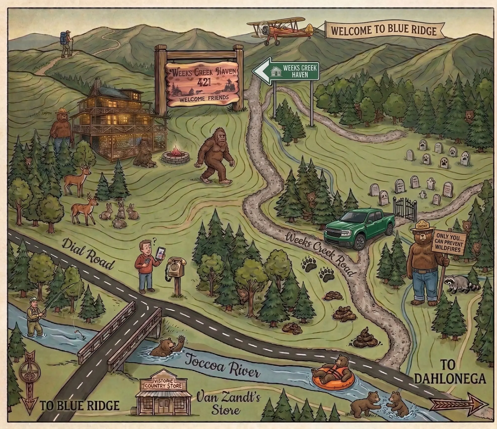
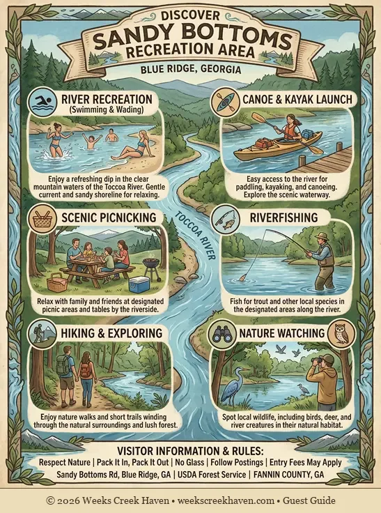
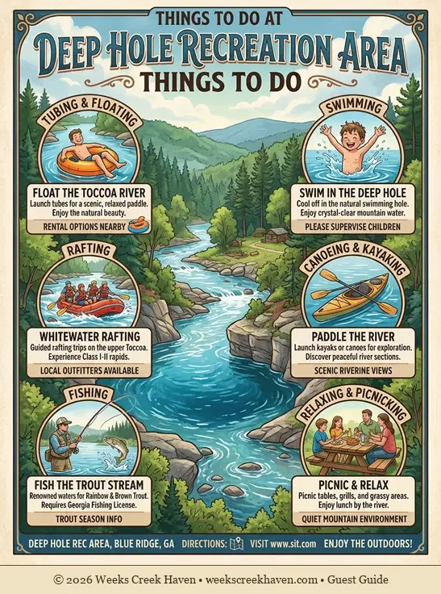
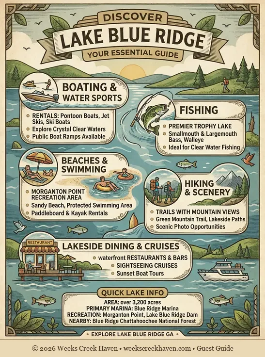

Your way to the Cabin
We are located at 421 Weeks Creek Rd. While the drive is beautiful, mountain roads can be tricky for GPS.
The "No Cell Service" Pro-Tip
Cell service drops significantly as you enter the Aska Adventure Area. Load your GPS directions while you are still in downtown Blue Ridge or at home. Once you arrive, our High-Speed Fiber Wi-Fi will get you back online instantly!

Look for the 'Welcome Friends' cedar sign at the driveway just after the road splits. Stay left. (click to enlarge)
Navigate with Google Maps
Nearby Recreation Areas
Sandy Bottoms
Perfect for **river access** and shallow water wading. A great spot to launch a tube or just sit by the Toccoa River.

Deep Hole
A popular **fishing and camping** area. Known for its deeper waters, it's a favorite starting point for many kayaking trips.

Lake Blue Ridge
Only 20 minutes away. Visit the **Morganton Point Recreation Area** for swimming, boat rentals, and lakeside picnics.
